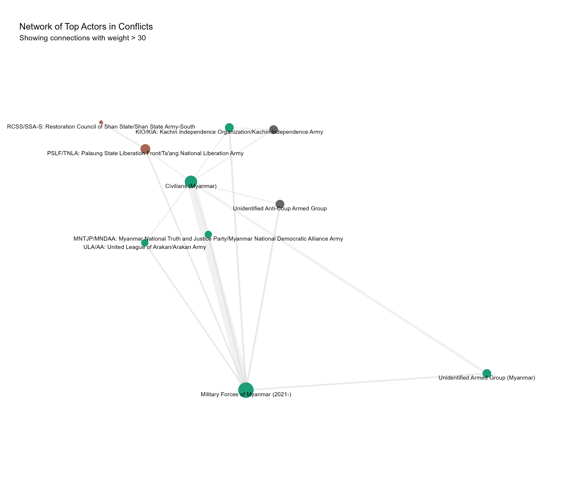
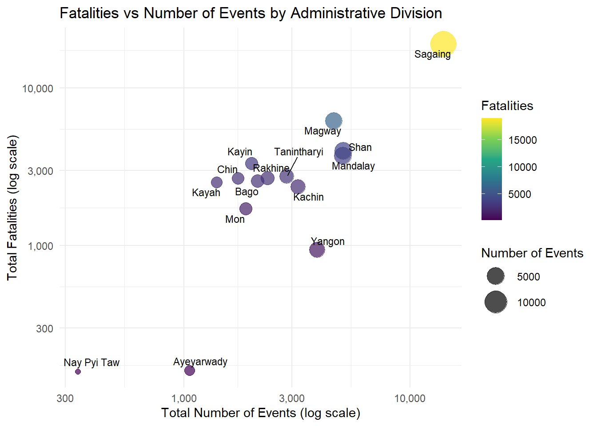

pacman::p_load(sf, tidyverse, tmap, maptools, raster, spatstat, sp, sparr, leaflet, OpenStreetMap, stars, RColorBrewer, knitr, igraph, viridis, ggrepel, patchwork, gridExtra)Take Home Exercise 1: Armed Conflict in Myanmar
2.0 Data Collection
2.1 Armed Conflict Data
For this assignment, armed conflict data of Myanmar between January 2021 - June 2024 from Armed Conflict Location & Event Data (ACLED), an independent, impartial, international non-profit organization collecting data on violent conflict and protest in all countries and territories in the world, was used.
2.2 GIS Data
Relevant Geospatial data was gathered from Myanmar Information Management Unit (MIMU)
3.0 Data Wrangling
3.1 Loading Packages
3.2 Loading Data
Before proceeding with our analysis, we need to import two sets of data:
- Armed Conflict Data: This dataset from ACLED contains information on the location, date, and type of conflict events that occurred in Myanmar from January 1, 2024 until June 30, 2024.
- Administrative Boundary Data: These shapefiles from MIMU contain the administrative boundaries of Myanmar at the state and region level.
acled_sf <- read_csv("data/geospatial/ACLED_Myanmar.csv") |>
st_as_sf(coords = c("longitude", "latitude"), crs = 4326) |>
mutate(event_date = dmy(event_date)) |>
mutate(
quarter = paste0(year, "-Q", quarter(event_date, with_year = FALSE)),
quarter = factor(quarter)
) |>
relocate(quarter, .after = year)Rows: 51553 Columns: 32
── Column specification ────────────────────────────────────────────────────────
Delimiter: ","
chr (20): event_id_cnty, event_date, disorder_type, event_type, sub_event_ty...
dbl (12): year, time_precision, inter1, inter2, interaction, iso, latitude, ...
ℹ Use `spec()` to retrieve the full column specification for this data.
ℹ Specify the column types or set `show_col_types = FALSE` to quiet this message.head(acled_sf, n=10)Simple feature collection with 10 features and 31 fields
Geometry type: POINT
Dimension: XY
Bounding box: xmin: 94.9021 ymin: 21.9251 xmax: 96.6819 ymax: 23.1269
Geodetic CRS: WGS 84
# A tibble: 10 × 32
event_id_cnty event_date year quarter time_precision disorder_type
<chr> <date> <dbl> <fct> <dbl> <chr>
1 MMR64313 2024-06-30 2024 2024-Q2 1 Political violence
2 MMR64320 2024-06-30 2024 2024-Q2 1 Political violence
3 MMR64321 2024-06-30 2024 2024-Q2 1 Political violence
4 MMR64322 2024-06-30 2024 2024-Q2 1 Strategic developments
5 MMR64323 2024-06-30 2024 2024-Q2 1 Political violence
6 MMR64324 2024-06-30 2024 2024-Q2 1 Strategic developments
7 MMR64325 2024-06-30 2024 2024-Q2 1 Political violence
8 MMR64326 2024-06-30 2024 2024-Q2 1 Political violence
9 MMR64328 2024-06-30 2024 2024-Q2 1 Political violence
10 MMR64330 2024-06-30 2024 2024-Q2 1 Political violence
# ℹ 26 more variables: event_type <chr>, sub_event_type <chr>, actor1 <chr>,
# assoc_actor_1 <chr>, inter1 <dbl>, actor2 <chr>, assoc_actor_2 <chr>,
# inter2 <dbl>, interaction <dbl>, civilian_targeting <chr>, iso <dbl>,
# region <chr>, country <chr>, admin1 <chr>, admin2 <chr>, admin3 <chr>,
# location <chr>, geo_precision <dbl>, source <chr>, source_scale <chr>,
# notes <chr>, fatalities <dbl>, tags <chr>, timestamp <dbl>,
# population_best <dbl>, geometry <POINT [°]>adm0 <- st_read(dsn = "data/adms", layer = "mmr_polbnda_adm0_250k_mimu_1") |>
st_transform(crs = 4326)Reading layer `mmr_polbnda_adm0_250k_mimu_1' from data source
`C:\Users\Home\Desktop\bjyeo\IS415-GeospatialAnalytics\TakehomeEx\THE01\data\adms'
using driver `ESRI Shapefile'
Simple feature collection with 1 feature and 2 fields
Geometry type: MULTIPOLYGON
Dimension: XY
Bounding box: xmin: 92.1721 ymin: 9.696844 xmax: 101.17 ymax: 28.54554
Geodetic CRS: WGS 84adm1 <- st_read(dsn = "data/adms", layer = "mmr_polbnda_adm1_250k_mimu_1") |>
st_transform(crs = 4326)Reading layer `mmr_polbnda_adm1_250k_mimu_1' from data source
`C:\Users\Home\Desktop\bjyeo\IS415-GeospatialAnalytics\TakehomeEx\THE01\data\adms'
using driver `ESRI Shapefile'
Simple feature collection with 15 features and 6 fields
Geometry type: MULTIPOLYGON
Dimension: XY
Bounding box: xmin: 92.1721 ymin: 9.696844 xmax: 101.17 ymax: 28.54554
Geodetic CRS: WGS 84adm2 <- st_read(dsn = "data/adms", layer = "mmr_polbnda_adm2_250k_mimu") |>
st_transform(crs = 4326)Reading layer `mmr_polbnda_adm2_250k_mimu' from data source
`C:\Users\Home\Desktop\bjyeo\IS415-GeospatialAnalytics\TakehomeEx\THE01\data\adms'
using driver `ESRI Shapefile'
Simple feature collection with 80 features and 7 fields
Geometry type: MULTIPOLYGON
Dimension: XY
Bounding box: xmin: 92.1721 ymin: 9.696844 xmax: 101.17 ymax: 28.54554
Geodetic CRS: WGS 84adm3 <- st_read(dsn = "data/adms", layer = "mmr_polbnda_adm3_250k_mimu_1") |>
st_transform(crs = 4326)Reading layer `mmr_polbnda_adm3_250k_mimu_1' from data source
`C:\Users\Home\Desktop\bjyeo\IS415-GeospatialAnalytics\TakehomeEx\THE01\data\adms'
using driver `ESRI Shapefile'
Simple feature collection with 330 features and 9 fields
Geometry type: MULTIPOLYGON
Dimension: XY
Bounding box: xmin: 92.1721 ymin: 9.696844 xmax: 101.17 ymax: 28.54554
Geodetic CRS: WGS 84admin_boundaries <- list(adm0 = adm0, adm1 = adm1, adm2 = adm2, adm3 = adm3)3.3 Visualization of Myanmar Administrative Divisions
Before we conducting any analysis, we need to familiarize ourselves with the entire map of Myanmar. Myanmar is divided into several administrative divisions, including states, regions, districts, and townships. We will visualize these administrative divisions using the tmap package.
Bonus: For the choice of color palette, we use the RColorBrewer package to generate a colorblind-friendly palette for accessibility. Set2 is one of the better colorblind-friendly choices for categorical data.
tmap_mode("plot")tmap mode set to plottingcolorblind_friendly_palette <- brewer.pal(8, "Set2")
myanmar_map <- tm_shape(adm1) +
tm_polygons("ST",
title = "States and Regions",
palette = colorblind_friendly_palette,
border.col = "white",
border.alpha = 0.5) +
tm_shape(adm0) +
tm_borders(lwd = 2) +
tm_graticules(labels.inside.frame = FALSE,
labels.rot = c(0, 90)) +
tm_layout(main.title = "Administrative Divisions of Myanmar",
main.title.size = 1.2,
legend.outside = TRUE,
legend.outside.position = "right",
frame = FALSE)
# tmap_save(myanmar_map, filename = "myanmar_admin_divisions.png", width = 8, height = 10)
myanmar_map3.4 Bonus: Geospatial Dashboard for Conflict Analysis
Premise:
The decision to create this interactive map stems from the need to provide a more dynamic and user-friendly way to explore the complex spatial and temporal patterns of conflict events in Myanmar. While static maps and charts offer valuable insights, an interactive dashboard allows for a more in-depth and customizable analysis of the data.
Unfortunately, since this rendered document will be output in a static format, the interactive dashboard will not be displayed here. However, the code for the Shiny app is provided below for reference. Additionally, there will be screenshots of the dashboard below for visualization purposes.
Features:
- Visualization of Spatial Patterns: The map displays the geographical distribution of conflict events across different administrative levels of Myanmar.
- Temporal Analysis: Date range slider enables exploration of how conflict patterns have changed over time.
- Event Type Distribution: The interactive pie chart provides a view of the relative frequency of different types of conflict events.
- Customization: Users can adjust parameters like administrative level and date range to focus on specific areas or time periods of interest.
Implementation:
shiny: Used for creating web app framework, allowing reactive updates based on user inputsleaflet: For interactive maps with dynamic layers and markersplotly: Used for creating the interactive pie chart. Hovering over the chart provides detailed information about each event type.
4.0 Preliminary Exploratory Data Analysis: Understanding the Conflict Landscape
4.1 Overall Landscape of Conflict Events
Spatial Point Distribution
The point map of conflict events in Myanmar, while rudimentary, is crucial for understanding the spatial distribution of the conflict. At a glance, we can observe regional hotspots.
point_map <- ggplot() +
geom_sf(data = adm1, fill = "white", color = "gray") +
geom_sf(data = acled_sf, aes(color = event_type), size = 0.5, alpha = 0.6) +
theme_minimal() +
labs(title = "Distribution of Conflict Events in Myanmar",
color = "Event Type") +
guides(color = guide_legend(override.aes = list(size = 5, alpha = 1, shape = 15))) +
theme(legend.key.size = unit(1, "cm"),
legend.text = element_text(size = 8),
legend.title = element_text(size = 10, face = "bold"))
point_mapKey Observations:
- There appears to be a much higher concentration of events in the Central and Northern regions
- Coastal areas and southern regions show fewer events, which suggests the conflict is more intense in the interior of the country.
Event Type Distribution
Another basic plot, but important to our discussion, is the distribution of event types.
event_type_plot <- acled_sf %>%
count(event_type) %>%
ggplot(aes(x = reorder(event_type, n), y = n, fill = event_type)) +
geom_bar(stat = "identity") +
geom_text(aes(label = n), hjust = -0.2, size = 3) +
coord_flip() +
theme_minimal() +
labs(title = "Distribution of Event Types",
x = "Event Type", y = "Number of Events") +
theme(legend.position = "none") +
scale_y_continuous(expand = expansion(mult = c(0, 0.3)))
event_type_plotKey Observations:
- Battles appear to be the most common type of event, indicating a high level of direct armed confrontation.
- Violence against civilians is also prevalent, highlighting the humanitarian impact of the conflict.
- Protests and riots suggest significant civil unrest component to the overall conflict landscape.
- The presence of strategic developments indicates that non-violent events also play a role in shaping the conflict dynamics.
At this stage, looking at numbers alone is insufficient and will not guarantee a comprehensive picture of the conflict landscape. We need to delve deeper into the data to uncover more nuanced insights.
Top Actors
No conflict discussion can be complete without framing the key actors involved.
top_actors <- acled_sf %>%
gather(key = "actor_type", value = "actor", actor1, actor2) %>%
count(actor) %>%
top_n(5, n) %>%
mutate(actor = fct_reorder(actor, n, .desc = TRUE)) %>%
ggplot(aes(x = actor, y = n, fill = actor)) +
geom_bar(stat = "identity") +
geom_text(aes(label = n, y = n), hjust = -0.2) +
coord_flip() +
scale_y_continuous(expand = expansion(mult = c(0, 0.25))) +
theme_minimal() +
labs(title = "Top 5 Actors by Number of Events",
x = "Actor", y = "Number of Events") +
theme(legend.position = "none")
top_actors
Key Observations:
- Military-Centric Conflict: The Myanmar Armed Forces are overwhelmingly involved in the highest nunmber of events, more than all other actors combined.
- Humanitarian Crisis: The high involvement of civilians implies a severe humanitarian impact, potentially including human rights violations, displacement, and civilian casualties.
- Asymmetric Conflict: The vast disparity between military events and other groups is a situation where the state’s armed forces are engaged against multiple, smaller opposition groups and civilian resistance.
- Potential for Escalation: The high involvement of civilians and protestors alongside military actions may indicate a volatile solution with potential for further escalation. Whether this holds true, we need to delve deeper into the data.
Bonus: Network Analysis of Top Actors
If it wasn’t apparent that the Myanmar Armed Forces is the central antagonist in the conflict, a network analysis of the top actors will make it abundantly clear. We want to explicitly show their deep involvement in the conflict landscape.
actor_network <- acled_sf %>%
dplyr::select(actor1, actor2) %>%
filter(actor1 != actor2) %>%
group_by(actor1, actor2) %>%
summarise(weight = n(), .groups = "drop") %>%
filter(weight > 30)
graph <- graph_from_data_frame(actor_network, directed = FALSE)
top_actors <- names(sort(degree(graph), decreasing = TRUE)[1:10])
graph <- induced_subgraph(graph, top_actors)
comm <- cluster_louvain(graph)
V(graph)$community <- membership(comm)
V(graph)$degree <- degree(graph)
layout <- layout_with_kk(graph)
network_data <- as.data.frame(layout)
names(network_data) <- c("x", "y")
network_data$name <- V(graph)$name
network_data$community <- V(graph)$community
network_data$degree <- V(graph)$degree
set.seed(123)
network_data$x <- network_data$x + runif(nrow(network_data), -0.05, 0.05)
network_data$y <- network_data$y + runif(nrow(network_data), -0.05, 0.05)
edge_data <- as_edgelist(graph) %>%
as.data.frame() %>%
rename(from = V1, to = V2) %>%
left_join(actor_network, by = c("from" = "actor1", "to" = "actor2")) %>%
left_join(network_data, by = c("from" = "name")) %>%
rename(x = x, y = y) %>%
left_join(network_data, by = c("to" = "name"), suffix = c("", "_end")) %>%
rename(xend = x_end, yend = y_end)
num_communities <- length(unique(network_data$community))
color_palette <- colorRampPalette(brewer.pal(8, "Dark2"))(num_communities)
network_plot <- ggplot() +
geom_segment(data = edge_data, aes(x = x, y = y, xend = xend, yend = yend, linewidth = weight),
alpha = 0.3, color = "lightgray", na.rm = TRUE) +
geom_point(data = network_data, aes(x = x, y = y, color = as.factor(community), size = degree)) +
geom_text(data = network_data, aes(x = x, y = y, label = name), check_overlap = TRUE, size = 3, vjust = 1.5) +
scale_color_manual(values = color_palette) +
scale_size_continuous(range = c(2, 10)) +
theme_void() +
labs(title = "Network of Top Actors in Conflicts",
subtitle = "Showing connections with weight > 30") +
theme(legend.position = "none",
plot.margin = unit(c(1, 1, 1, 1), "cm")) +
coord_cartesian(clip = "off") +
expand_limits(x = c(min(network_data$x) - 0.4, max(network_data$x) + 0.4),
y = c(min(network_data$y) - 0.4, max(network_data$y) + 0.4))
ggsave("network_plot.png", network_plot, width = 12, height = 10, dpi = 300)
Key Observations:
- Central Node - Myanmar Armed Forces: Being the largest node in the graph, the military forces has connections to almost all other actors. Unsurprisingly, it is the most connected and influential actor in the conflict. This is unsurprising for several reasons:
- The national military is engaged in conflicts with multiple groups across the country
- It has the resources and reach to be involved in most conflict events
- Civilian (Myanmar) Node: The second largest node represents civilians. Civilians are frequently targets or involved in conflict events.
Section Recap
- Central and Northern regions show higher conflict events
- Myanmar Armed Forces is the primary actor in the conflict
- The volatile situation may give way to further escalation
4.2 Progression of Conflict
In the previous section, we presented a snapshot of the conflict landscape. Since 2021, over 3.5 years of the conflict has passed, and we want to understand how the conflict has evolved.
Temporal Trend: Conflict Events
temporal_plot <- acled_sf %>%
count(quarter) %>%
mutate(quarter = factor(quarter, levels = unique(quarter[order(quarter)]))) %>%
ggplot(aes(x = quarter, y = n)) +
geom_line(aes(group = 1), color = "blue", alpha = 0.7) +
geom_point(color = "blue", size = 3) +
geom_smooth(aes(group = 1), formula = y ~ x, method = "loess", se = TRUE,
color = "red", fill = "pink", alpha = 0.3, linewidth = 1.2) +
labs(title = "Trend of Conflict Events Over Time",
x = "Quarter", y = "Number of Events") +
theme_minimal() +
theme(axis.text.x = element_text(angle = 45, hjust = 1)) +
scale_y_continuous(labels = scales::comma)
print(temporal_plot)Key Observations:
- Peak and Decline: There is a clear peak in conflict events around 2021-Q2 to 2022-Q1, around the start of the conflict. Subsequently, there is a general decline in conflict events over time.
- The conflict might be starting to stabilize or reduce in intensity.
- Recent Fluctuations: The overall trend may be downward, but there are noticeable fluctuations in the most recent quarters, suggesting the conflict remains volatile.
- Uncertainty in Trend: The large confidence area presents a high degree of uncertainty. This could prove challenging to make definitive predictions about future conflict patterns based on this data alone.
Temporal Trend: Fatalities
fatalities_trend <- acled_sf %>%
group_by(quarter) %>%
summarise(total_fatalities = sum(fatalities, na.rm = TRUE)) %>%
mutate(quarter = factor(quarter, levels = unique(quarter[order(quarter)]))) %>%
ggplot(aes(x = quarter, y = total_fatalities)) +
geom_line(aes(group = 1), color = "blue", alpha = 0.7) +
geom_point(color = "blue", size = 3) +
geom_smooth(aes(group = 1), formula = y ~ x, method = "loess", se = TRUE,
color = "red", fill = "pink", alpha = 0.3, linewidth = 1.2) +
labs(title = "Trend of Fatalities Over Time in Myanmar",
x = "Quarter", y = "Total Fatalities") +
theme_minimal() +
theme(axis.text.x = element_text(angle = 45, hjust = 1)) +
scale_y_continuous(labels = scales::comma)
fatalities_trend
Key Observations:
- Rapid Initial Increase: There’s a sharp rise in fatalities from 2021-Q1 to 2022-Q1, indicating an intensification of the conflict in its early stages, contingent with the observations in the previous plot.
- Stabilization at High Level: After the initial peak, fatalities have stabilized at a high level, with some fluctuations but no clear downward trend.
Heatmap: Concentration of Conflict Events
acled_df <- acled_sf %>%
mutate(Longitude = st_coordinates(geometry)[,1],
Latitude = st_coordinates(geometry)[,2])
animated_heatmap <- ggplot() +
stat_density_2d(data = acled_df,
aes(x = Longitude,
y = Latitude,
fill = after_stat(level)),
geom = "polygon",
alpha = 0.5) +
geom_sf(data = adm1, fill = NA, color = "gray") +
viridis::scale_fill_viridis() +
theme_minimal() +
labs(title = "Heatmap of Conflict Events in Myanmar",
subtitle = "Quarter: {current_frame}",
x = "Longitude",
y = "Latitude",
fill = "Density") +
gganimate::transition_manual(quarter) +
gganimate::ease_aes('linear')
# animated_heatmap_render <- gganimate::animate(animated_heatmap,
# nframes = length(unique(acled_df$quarter)),
# fps = 1,
# width = 800,
# height = 600)
# gganimate::anim_save("animated_heatmap.gif", animated_heatmap_render)Key Observations:
- Spatial Concentration: Conflict events are densely concentrated in the Central, Northern and Southern regions of Myanmar.
- Central/Northern Hotspots: Sagaing, Magway, Mandalay, Shan
- Southern Hotspots: Yangon
- Stabilization of Conflict: The density of each hotspot appears to decrease over time, suggesting a potential stabilization of the conflict in these areas.
Section Recap
- We have identified conflict hotspots as Sagaing, Magway, Mandalay, Shan, and Yangon.
- The conflict may be stabilizing, but the recent fluctuations and high fatality rates may suggest a volatile situation, in line with our earlier speculation.
4.3 Contested Areas and Relative Impact
Most Active Administrative Regions
clean_admin_name <- function(name) {
name <- str_remove(name, "-.*$")
name <- str_remove(name, "\\(.*\\)")
return(str_trim(name))
}
top_10_regions <- acled_sf %>%
st_drop_geometry() %>%
mutate(admin1 = clean_admin_name(admin1)) %>%
count(admin1) %>%
arrange(desc(n)) %>%
top_n(10, n)
top_regions_plot <- ggplot(top_10_regions, aes(x = reorder(admin1, n), y = n, fill = n)) +
geom_bar(stat = "identity") +
coord_flip() +
viridis::scale_fill_viridis(option = "D", direction = -1) +
labs(title = "Top 10 Administrative Regions with Most Conflicts",
x = "Administrative Region",
y = "Number of Conflict Events") +
theme_minimal() +
theme(axis.text.y = element_text(angle = 0, hjust = 1))
top_regions_plot
The above bar chart verifies our earlier observations, with Sagaing, Shan, Mandalay, Magway and Yangon being the most conflict-prone regions in Myanmar.
Scatter Plot Analysis: Fatalities vs Conflict Events across Administrative Divisions
events_fatalities <- acled_sf %>%
mutate(admin1 = clean_admin_name(admin1)) %>%
group_by(admin1) %>%
summarise(
total_events = n(),
total_fatalities = sum(fatalities, na.rm = TRUE)
)
ggplot(events_fatalities, aes(x = total_events, y = total_fatalities)) +
geom_point(aes(size = total_events, color = total_fatalities), alpha = 0.7) +
ggrepel::geom_text_repel(aes(label = admin1), size = 3, max.overlaps = Inf) +
scale_size_continuous(range = c(2, 10)) +
scale_color_viridis_c() +
scale_x_log10(labels = scales::comma) +
scale_y_log10(labels = scales::comma) +
labs(
title = "Fatalities vs Number of Events by Administrative Division",
x = "Total Number of Events (log scale)",
y = "Total Fatalities (log scale)",
size = "Number of Events",
color = "Fatalities"
) +
theme_minimal() +
theme(legend.position = "right") +
coord_cartesian(clip = "off")
Key Observations:
- Severity Hotspots: Regions in the upper right quadrant experience intense conflict with both high event frequency and high fatalities.
- Sagaing’s position in the upper right corner indicates it’s the most severely affected region.
- Magway, Shan and Mandalay also show high levels of conflict intensity.
- Outliers: Yangon shows an interesting pattern with a relatively high number of events but lower fatalities, possibly indicating a different nature of conflict.
Section Recap
- Conflict hotspots result in the most number of events and fatalities
- Yangon’s unique position calls into question further research on the regions’ geographical and political dynamics
4.4 Overall Analysis
- Conflict Intensity and Distribution: The conflict in Myanmar is not uniformly distributed, with clear hotspots in the Central and Northern regions.
- Hypothesis: The spatial distribution of conflict events is not random.
- Temporal Trends and Conflict Evolution: While there’s an overall declining trend in conflict events since the peak in 2021 - 2022, fatalities remain high, and recent fluctuations suggest ongoing volatality. This pattern indicates a potential shift in conflict dynamics rather than de-escalation.
- Research Question: How has the nature of the conflict changed over time, and what factors are contributing to the sustained high fatality rates despite decreasing event frequency?
- Central Role of Myanmar Armed Forces: The miltary is overwhelmingly involved in conflict events. Their dominance suggests an asymmetric conflict where state forces are engaged against multiple, smaller opposition groups and civilian resistance.
- Regional Variations in Conflict Characteristics: The Southern front on a whole is relatively less contested, though Yangon shows a unique pattern.
5.0 First Order Spatial-Temporal Patterns Analysis: A Closer Look at the Myanmar Conflict Landscape
5.1 Kernel Density Estimation
kde_quarterly <- function(data, quarter, bw = NULL, adaptive = FALSE) {
data_quarter <- data %>%
filter(quarter == !!quarter)
window <- as.owin(st_bbox(adm0))
coords <- st_coordinates(data_quarter)
# Remove exact duplicates before creating ppp object
unique_coords <- unique(coords)
ppp_obj <- ppp(unique_coords[,1], unique_coords[,2], window = window)
ppp_obj <- rjitter(ppp_obj, retry = TRUE, nsim = 1, drop = TRUE, max = 0.001)
ppp_obj <- unique.ppp(ppp_obj)
if (is.null(bw)) {
bw <- bw.scott(ppp_obj)
}
tryCatch({
if (adaptive) {
kde <- adaptive.density(ppp_obj, bw = bw, edge = TRUE)
} else {
kde <- density.ppp(ppp_obj, sigma = bw, edge = TRUE)
}
r <- raster(kde)
r_masked <- mask(r, as(adm0, "Spatial"))
return(r_masked)
}, error = function(e) {
warning(paste("Error in quarter", quarter, ":", e$message))
return(NULL)
})
}quarters <- unique(acled_sf$quarter) %>%
sort()
quarters [1] 2021-Q1 2021-Q2 2021-Q3 2021-Q4 2022-Q1 2022-Q2 2022-Q3 2022-Q4 2023-Q1
[10] 2023-Q2 2023-Q3 2023-Q4 2024-Q1 2024-Q2
14 Levels: 2021-Q1 2021-Q2 2021-Q3 2021-Q4 2022-Q1 2022-Q2 2022-Q3 ... 2024-Q2create_kde_layers <- function(data, quarters, adaptive = FALSE) {
kde_layers <- lapply(quarters, function(q) {
tryCatch({
kde_quarterly(data, q, adaptive = adaptive)
}, error = function(e) {
warning(paste("Error in quarter", q, ":", e$message))
return(NULL)
})
})
kde_layers <- kde_layers[!sapply(kde_layers, is.null)]
names(kde_layers) <- quarters[!sapply(kde_layers, is.null)]
return(kde_layers)
}kde_layers_fixed <- create_kde_layers(acled_sf, quarters)
kde_layers_adaptive <- create_kde_layers(acled_sf, quarters, adaptive = TRUE)
get_density_range <- function(kde_layers) {
min_density <- min(sapply(kde_layers, function(layer) min(values(layer), na.rm = TRUE)))
max_density <- max(sapply(kde_layers, function(layer) max(values(layer), na.rm = TRUE)))
return(c(min_density, max_density))
}
density_range_fixed <- get_density_range(kde_layers_fixed)
density_range_adaptive <- get_density_range(kde_layers_adaptive)plot_kde_layer <- function(kde_layer, quarter, admin_boundary, density_range, adaptive = FALSE) {
if (is.null(kde_layer)) {
return(ggplot() + theme_void() + ggtitle(paste("No data for", quarter)))
}
kde_df <- as.data.frame(kde_layer, xy = TRUE) %>%
rename(density = layer)
ggplot() +
geom_raster(data = kde_df, aes(x = x, y = y, fill = density)) +
geom_sf(data = admin_boundary, fill = NA, color = "white", size = 0.2) +
scale_fill_viridis_c(option = "inferno",
limits = density_range,
oob = scales::squish,
name = "Conflict\nDensity") +
labs(title = paste(ifelse(adaptive, "Adaptive", "Fixed"), "Bandwidth KDE -", quarter),
x = NULL, y = NULL) +
theme_minimal() +
theme(plot.title = element_text(size = 10, face = "bold"),
legend.position = "right",
axis.text = element_blank(),
axis.ticks = element_blank()) +
coord_sf()
}
create_kde_plots <- function(kde_layers, density_range, adaptive = FALSE) {
lapply(seq_along(kde_layers), function(i) {
plot_kde_layer(kde_layers[[i]], names(kde_layers)[i], adm0, density_range, adaptive)
})
}
kde_plots_fixed <- create_kde_plots(kde_layers_fixed, density_range_fixed)
kde_plots_adaptive <- create_kde_plots(kde_layers_adaptive, density_range_adaptive, adaptive = TRUE)
# Combine fixed and adaptive plots
combined_plots <- map2(kde_plots_fixed, kde_plots_adaptive, ~ .x + .y + plot_layout(ncol = 2))
# Display the combined plots
for (plot in combined_plots) {
print(plot)
}